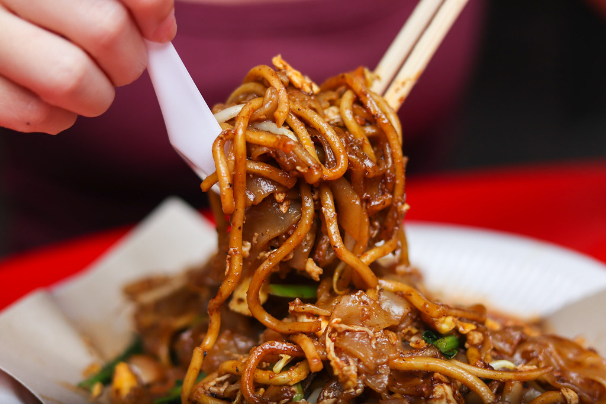
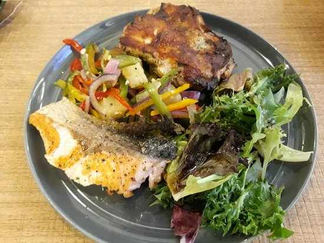
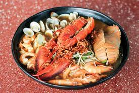

786 Char Kway Teow

This hidden gem located a short drive from Singapore’s business district.
786 Char Kway Teow is owned by a friendly Chinese-Muslim, who puts his passion for cooking into every plate of his yummy Char Kway Teow (From SGD 3).
Note that queues can get remarkably long during peak hours, but it is worth the wait as a plate of this delicious Char Kway Teow, will make you come back for seconds.
You can fully customise your plate of Char Kway Teow by asking for additional cockles or by making it spicier.
Halal status: Muslim-Owned
Average price: $3
Opening hours: 2.30pm - 10pm (Friday to Wednesday), Closed on Thursdays (Opening Hours affected during Public Holidays)
Address: 115 Bukit Merah View, Bukit Merah View Market and Hawker Centre, #01-28, Singapore 151115
Brio (Jurong Point)

Conveniently located in the heartlands, Brio is a hipster café, which serves up quality, delicious European street food.
Their extensive menu includes a mix of cuisines from all over Europe with a little Asian twist.
Here for a filling, yummy meal? Try out their Salted Egg Fish & Chips (SGD 14.50) or their Beef Ragu Tagliatelle (SGD 16.80).
Don’t forget to wash it down with one of their heavenly milk shakes, especially their Salted Caramel Milkshake (SGD 8.20).
Halal status: Halal-Certified
Average price: $15
Opening hours: 11am – 10pm on Weekdays, 10.30am - 10pm on Weekends (Opening Hours affected during Public Holidays)
Address: 1 Jurong West Central 2, Jurong Point, #02-24/K5, Singapore 648886
Deanna’s Kitchen (Jurong East)

Deanna’s Kitchen serves up delicious, refreshing prawn noodles, which sells out fast everyday (From SGD 7).
You have the option to choose your size of prawns, ranging from small shrimps to giant prawns.
The pièce de résistance of each bowl of prawn noodles is their robust, flavourful broth.
Their signature special is their seafood platter (SGD 39), which includes prawns (big and small), clams, crayfishes and a lobster, all cooked in a huge bowl of the same yummy broth.
Halal status: Muslim-Owned
Average price: $10
Opening hours: 12pm - 9pm (Tuesday to Saturday), 10am - 2pm (Sunday), Closed on Mondays. (Opening Hours affected during Public Holidays)
Address: 214 Jurong East Street 21, Padi Emas Coffee Shop, Singapore 600214